01유품정리
고인의 물건을 함부로 버리지 않습니다. 보관할 것과 정리할 것을 유가족과 상의하며 예를 갖춰 진행합니다.
유품정리, 고독사 현장 정리, 쓰레기집 청소, 퇴거청소, 폐기물 처리까지. 상담부터 마무리 청소까지 한 팀이 책임지고 진행합니다. 전국 출장 가능합니다.
상단 영상은 연출된 장면입니다. 실제 작업 사진은 작업 전후 페이지에서 확인하실 수 있습니다.
공간회복24는 폐기물 수집·운반 신고를 마친 특수청소 업체입니다. 사진이나 방문으로 현장을 확인한 뒤 견적을 안내하고, 분리·운반·폐기물 처리·기본 청소까지 한 번에 진행합니다.
누적 작업 건수
예시 수치숨고 후기 평점 (5점 만점)
홈페이지에 공개한 작업 사례
출장 가능 지역 (제주 제외 전국)
누적 작업 건수는 아직 확정된 집계가 없어 예시로 표시한 값입니다. 실제 수치를 알려주시면 교체합니다. 나머지 수치는 이 홈페이지에 실제로 게시된 자료를 기준으로 한 값입니다.

여섯 가지 작업을 전문으로 합니다. 어떤 작업이 필요한지 애매하시면 사진 한 장으로 먼저 상담해 주세요.
고인의 물건을 함부로 버리지 않습니다. 보관할 것과 정리할 것을 유가족과 상의하며 예를 갖춰 진행합니다.
오염 부위 정리와 소독, 탈취까지 포함해 현장을 정리합니다. 이웃에 알려지지 않도록 조용히 작업합니다.
수년간 쌓인 짐과 쓰레기를 분리 배출하고, 생활이 가능한 상태로 되돌립니다. 재사용 가능한 물건은 따로 정리합니다.
이사·퇴거 후 남은 짐 처리와 청소를 한 번에 진행합니다. 임대인·임차인 일정에 맞춰 빠르게 마무리합니다.
이사·생활·건축 폐기물을 수거해 적법하게 처리합니다. 1톤 차량 반차·한차 단위로 규모에 맞게 진행합니다.
일반 청소로 해결되지 않는 오염, 악취, 장기 방치 공간을 다룹니다. 현장 상태에 맞춰 작업 범위를 설계합니다.
실제 작업 현장의 전후 사진입니다. 사진 위에서 마우스를 움직이거나 손가락으로 밀면 전후가 비교됩니다.


비용은 폐기물 양, 작업 시간, 작업 환경(엘리베이터 유무, 계단 작업 여부), 작업 범위에 따라 달라집니다. 그래서 견적 전에 현장 상태를 꼭 확인합니다.
전화 또는 카카오톡으로 상황을 알려주세요. 현장 사진이 있으면 더 정확합니다.
사진 또는 방문 확인 후 작업 범위와 비용을 안내합니다. 확인되지 않은 추가 비용을 청구하지 않습니다.
약속한 날짜에 분리, 운반, 폐기물 처리, 기본 청소 순으로 진행합니다.
작업 전후 사진으로 결과를 확인해 드리고 마무리합니다.
폐기물은 아무나 수거해 갈 수 없습니다. 공간회복24는 논산시에 폐기물처리(수집·운반) 신고를 마치고 전국을 영업구역으로 운영합니다.

| 상호 | 공간회복24 |
|---|---|
| 대표 | 김효중 |
| 사업자등록번호 | 604-07-95837 |
| 신고 | 폐기물처리(수집·운반) 신고증명서, 논산시 제55호 |
| 운반 차량 | 1톤 밀폐형 덮개설치 차량 (82더0844) |
| 영업구역 | 전국 (제주도 제외, 주요 지역: 충청·전라) |
| 상담 | 010-9265-7604 · 카카오톡 오픈채팅 |
견적 매칭 서비스 숨고(Soomgo)를 통해 접수된 실제 고객 후기입니다.
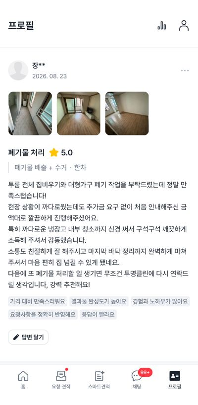
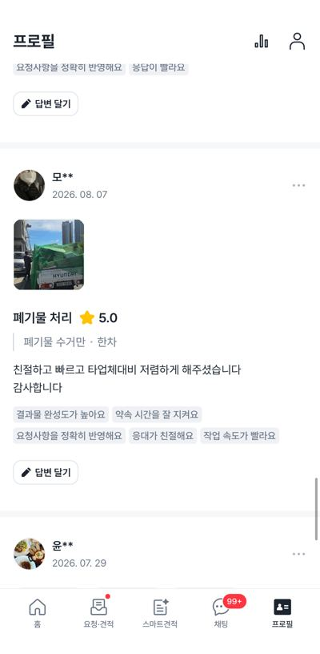
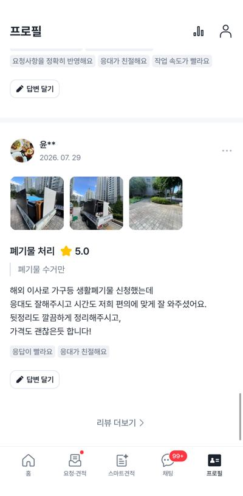
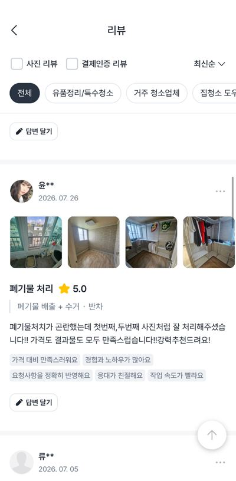
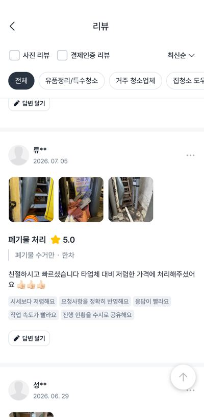
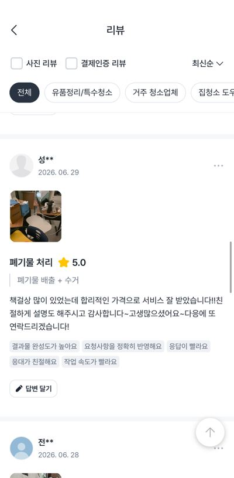
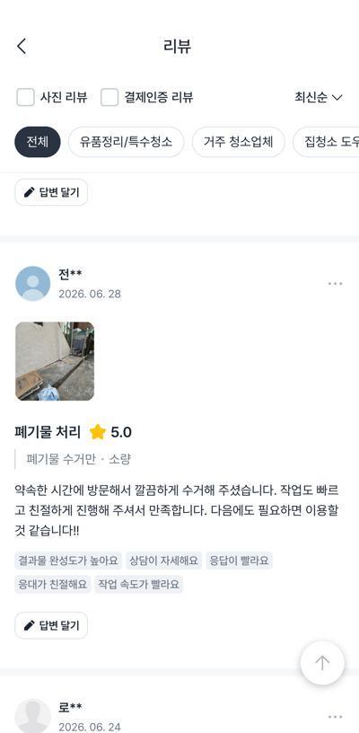
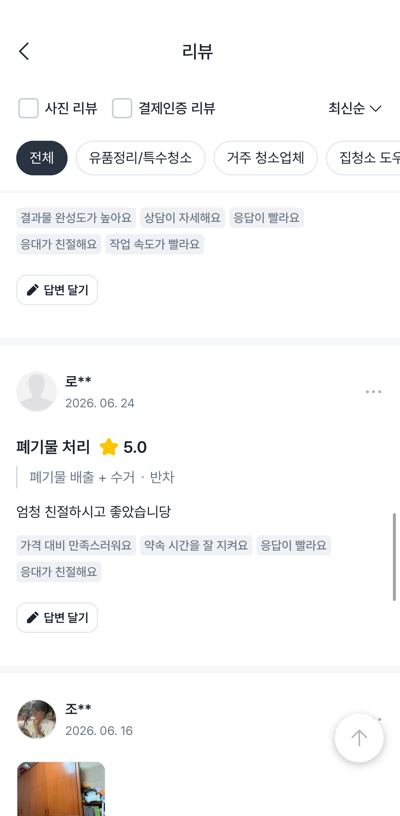
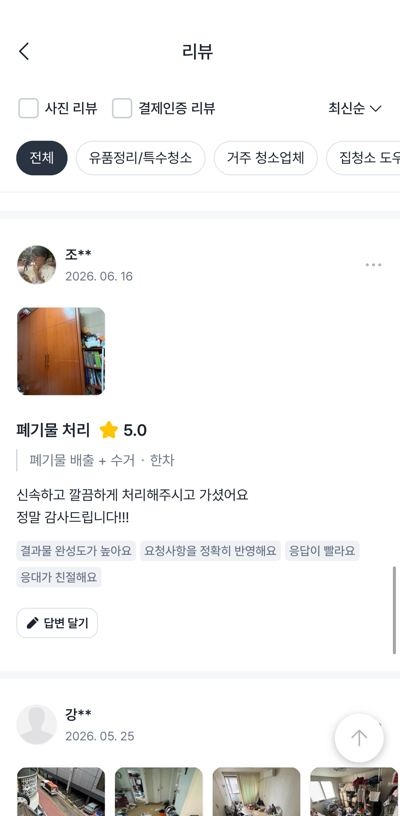
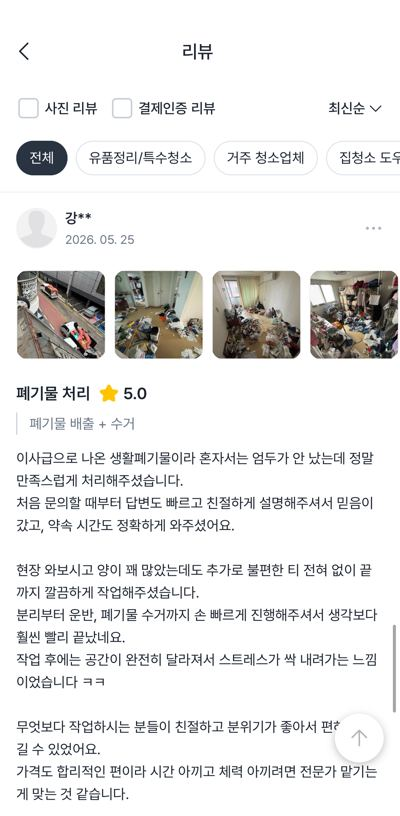
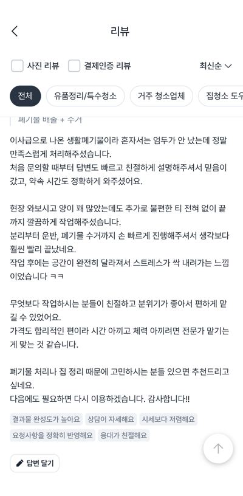
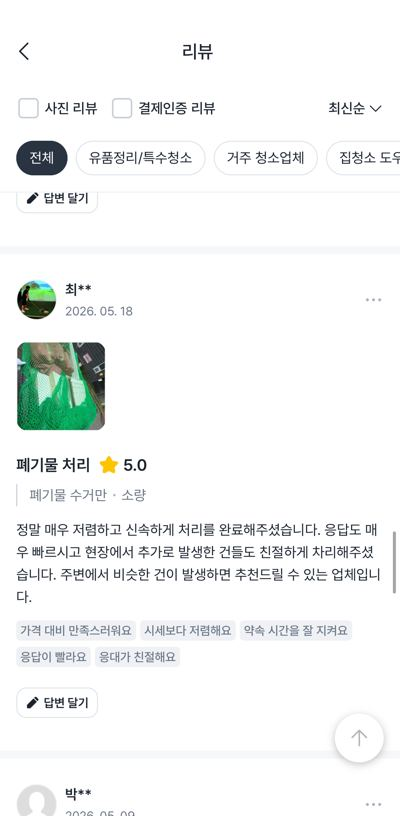
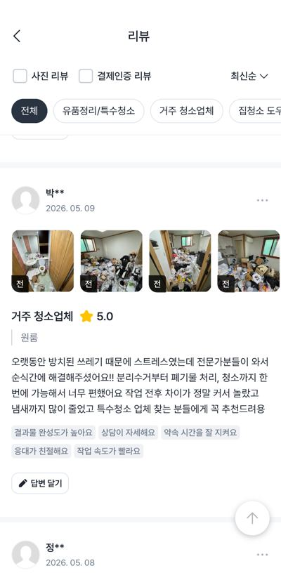
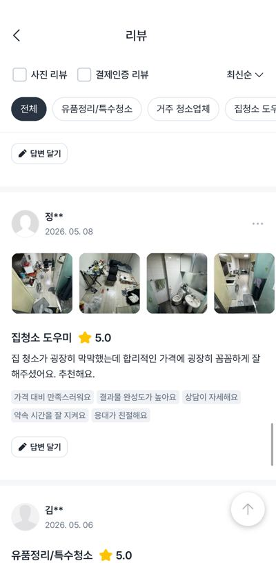
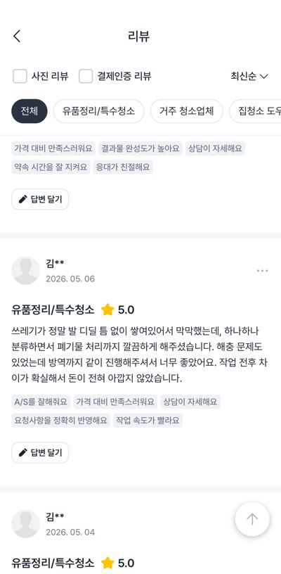
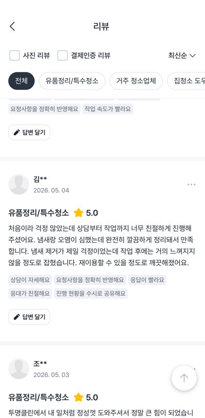
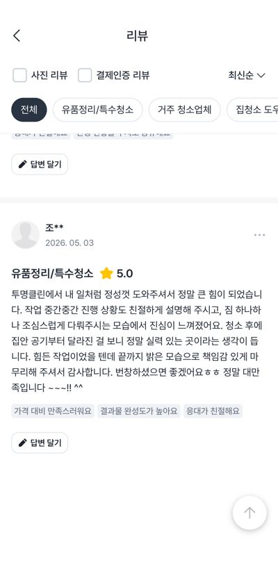
견적 매칭 서비스 숨고(Soomgo)에 실제 접수된 후기 화면을 그대로 캡처한 이미지입니다. 마우스를 올리면 흐름이 멈춥니다.
폐기물 양, 작업 시간, 작업 환경(엘리베이터 유무·계단 작업 여부), 작업 범위(수거만 진행할지, 기본 청소까지 포함할지)에 따라 달라집니다. 현장 사진이나 방문 확인 후 견적을 안내드리며, 안내한 범위 밖의 비용을 임의로 청구하지 않습니다.
전국 출장이 가능합니다(제주도 제외). 충청·전라 지역이 주요 활동 지역이라 이 지역은 일정 조율이 특히 빠릅니다.
네. 유품정리와 고독사 현장 정리는 특히 주변에 알려지지 않도록 차량과 작업 동선을 조율해 조용히 진행합니다.
작업 전 보관할 물건의 기준을 먼저 여쭤봅니다. 현금, 귀중품, 서류, 사진 등은 작업 중 발견되는 대로 따로 모아 전달드립니다.
폐기물처리(수집·운반) 신고를 마친 차량으로 수거해 적법한 절차로 처리합니다. 무단 투기나 불법 처리로 배출자가 피해를 보는 일이 없도록 진행합니다.
사진 한 장이면 대략적인 견적 상담이 가능합니다. 통화가 어려우시면 카카오톡으로 편하게 남겨주세요.